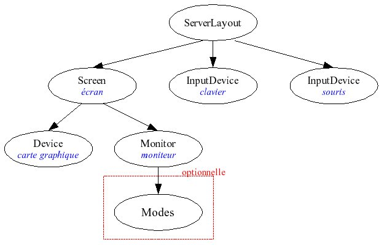

Vous rencontrez des difficultés à configurer votre affichage sur votre distribution GNU/Linux préférée ? Des problèmes d'accélération graphique ou de résolution d'écran ?
Il y a beaucoup de chances que dans ce cas, vous soyez obligé de configurer vous même votre X.org. Si cela n'a rien d'impossible (bien au contraire) c'est une opération un peu délicate la première fois. Ce tutoriel a pour but de vous présenter X.org ainsi que de vous aider à le configurer.
X.org est un logiciel libre du type serveur X, la famille des systèmes de fenêtrage la plus connue, pour les systèmes d'exploitation de type UNIX. X.org est l'implémentation officielle du système graphique X Window System.
C'est donc un serveur graphique, c'est lui qui va faire en sorte que l'on dispose d'autre chose que les ttys sur votre système, il va nous fournir une interface graphique. Seul, il est limité; il n'affiche en effet que des fenêtres, il faudra recourir à l'utilisation d'un gestionnaire de fenêtre ou d'un environnement de bureau si on veut un résultat plus agréable à l'oeil.
X.org est un programme basé sur une architecture serveur/client :
le serveur X est lancé sur une machine possédant un écran, un clavier et une souris (ou d'autres périphériques)
le client X se connecte au serveur afin de lui donner ses requêtes, ce sont des applications graphiques affichées dans une fenêtre du serveur X
le protocole X qui permet l'échange de données entre le serveur et le client
Vous l'aurez compris, sans serveur graphique, impossible d'avoir un rendu autre que celui de la console. Je vous invite donc de ce pas à installer un serveur graphique, si ce n'est déjà fait.
Installation de X.org
Il suffit d'installer le paquet xorg avec votre gestionnaire de paquetages favori. On lancera par exemple sous Archlinux
# pacman -S xorg
Notons que ce paquet (qui est en fait un groupe) contient entre autres
xf86-video-vesa
Pilote graphique générique, fonctionne avec une majorité de cartes graphiques
xorg-fonts-100dpi
Police de caractères, définition 100 dpi
xorg-fonts-75dpi
Police de caractères, définition 75 dpi
xorg-res-utils
Utilitaire pour gérer les ressources de xorg
xorg-server
Votre serveur graphique
xorg-server-utils
Utilitaires indispensables au serveur
xorg-twm
Gestionnaire de fenêtre par défaut de xorg
xorg-utils
Utilitaires permettant d'avoir des infos sur le serveur
xorg-xinit
Script d'initialisation de session (exécuté par startx)
xterm
Émulateur de terminal par défaut de xorg
Détail du groupe xorg On va maintenant pouvoir configurer notre serveur.
Nous allons maintenant devoir configurer notre serveur graphique pour que tout se passe bien. Que vous installiez une distribution sans interface graphique ou que vous ayez des ennuis avec le serveur graphique que vous utilisez actuellement, il est bon de savoir utiliser un éditeur de texte en ligne de commande. On ne saurait effectivement pas utiliser Kate ou Gedit en cas, vu que l'interface graphique ne fonctionnerait pas. Optez par exemple pour nano qui est simple à utiliser ou pour vim ou emacs, vous savez ce que vous faites dans ce cas là.
Toute la configuration de X.org se passe au niveau de son fichier de configuration, le xorg.conf. Ce fichier est par défaut situé dans /etc/X11/xorg.conf.
Aucune précaution n'est inutile, commencez tout d'abord par sauvegarder votre xorg.conf actuel.
cp /etc/X11/xorg.conf /etc/X11/xorg.conf.backup
Si vous désirez le récupérer, inversez les opérandes de la commande cp.
Structure du fichier xorg.conf
Nous allons maintenant nous attarder sur un exemple de xorg.conf (le mien) et en détailler sa structure. Cette partie est facultative car, comme nous allons le voir, il existe quelques scripts permettant la configuration (semi)automatique d'un fichier valide. Il est quand même utile de savoir comment il est construit, ne serait-ce que si on est amené à le modifier à la main, ou par simple curiosité. Voici donc un xorg.conf valide
Comme vous le voyez, le fichier est composée de plusieurs sections, chacune définissant les paramètres pour une partie du système. On rencontre ainsi la section qui permet de configurer la carte graphique, celle qui permet de configurer le clavier/la souris, ou encore celle qui gère l'écran. Chaque section admet la syntaxe suivante
Section "nom de la section"
entrées...
EndSection
Notons aussi que certaines sections font appel récursivement à d'autres. On va maintenant observer chacune de ces sections en détails.
Détail des différentes sections
On va détailler les différentes sections dans l'ordre d'apparition sur mon xorg.conf.
Section ServerLayout
Dans cette section, on liste tout ce qui est périphérique d'entrée, comme la souris ou le clavier, ainsi que les écrans. Cette section doit au minimum comporter les entrées "Identifier" et Screen.
Dans cette section, on précise les périphériques d'entrées, le clavier et la souris. On les renseigne en même temps que les pilotes à utiliser. Seules les entrées "Identifier" et "Driver" sont obligatoires, le reste est optionnel.
Cette section contient la description et les options spécifiques à un moniteur, ainsi que les informations sur le mode vidéo. Elle possède une seule entrée obligatoire: Identifier, afin de pouvoir la nommer.
Cette partie contient les informations matérielles de la carte graphique. Tout comme la section InputDevice, elle nécessite au moins deux entrées: Identifier et Driver, les autres entrées sont aussi optionnelles.
Cette section est définie par un moniteur et une carte graphique, afin de pouvoir permettre l'affichage, c'est aussi ici que le mode vidéo utilisé est choisi parmi les modes que l'ordinateur peut gérer. Elle possède deux entrées obligatoires: Identifier et Device. Elle est souvent composée d'une sous-section Display possédant au moins une entrée Depth, informant sur la profondeur des couleurs à utiliser.
Beaucoup de sections sont optionnelles, mais certains sont obligatoires et nécessaires au bon fonctionnement de notre serveur graphique. Imaginons un système tout simple, uniquement constitué d'un écran, d'un clavier et d'une souris.
L'écran Screen sera défini par une carte graphique: Device et un moniteur: Monitor. Le clavier et la souris seront chacun défini par une section InputDevice. La combinaison de la section Screen et des InputDevice forme un ServerLayout. On peut représenter ceci par un arbre

Structure générique du fichier de configuration de X.org Un même ServerLayout peut avoir plusieurs écrans, ou bien utiliser plusieurs cartes graphiques, il est donc possible que vous ayez plusieurs sections Device et/ou Monitor. De plus, il est possible de trouver plusieurs ServerLayout au sein de xorg.conf, car plusieurs serveurs X peuvent être lancés simultanément sur une même machine (Par exemple en passant en console tty à l'aide de Ctrl+Alt+F1).
Vous serez d'accord avec moi que si on doit tout configurer soi-même, ça devient vite assez pénible, sans compter la probabilité élevée de faire une erreur, compromettant ainsi notre belle interface graphique. Il existe des scripts qui génèrent un xorg.conf valide, ils sont l'objet de la section suivante.
Comme je viens de vous le dire, on est heureusement assisté par des scripts de configuration, on va les présenter ainsi qu'expliquer leur utilisation. Mais avant, on va un peu parler des pilotes.
Une question de pilotes
Histoire de profiter pleinement de sa carte graphique, il est important d'installer le bon pilote et de le renseigner. Le pilote générique, vesa, est par défaut utilisé. Bien qu'il fonctionnera sur énormément (pour ne pas dire toutes) de cartes graphiques, il a un rendu que vous pourriez juger insuffisant. On préférera donc le substituer par un pilote plus adapté à son matériel.
Alors, afin de savoir de quelle carte graphique on dispose, et par extension, savoir quel pilote installer, on va lister tous les composants connectés au bus PCI (dont votre carte graphique) et on va filtrer le résultat au moyen de grep, pour ne récolter que les informations nécessaires. On lancera donc la commande suivante
La conclusion est donc que j'ai une carte nVidia. Il existe trois grandes familles de cartes graphiques :
ATI
Intel
nVidia
Suivant la carte graphique dont vous disposez, il faudra installer un pilote différent. Voici les pilotes à installer suivant le type de carte graphique
nVidia
ATI
Intel
nouveau (driver libre)
ati (driver libre)
i810 (driver propriétaire)
nv (driver libre)
catalyst (driver propriétaire)
i910 (driver propriétaire)
nvidia (driver propriétaire)
radeon (driver libre)
intel (driver libre)
Tableau non exhaustif de pilotes à installer selon le vendeur de carte graphique Reportez-vous à la documentation officielle de votre distribution pour plus de détails. Une fois que vous êtes certain du pilote à installer, installez-le comme un paquetage classique.
Scripts de configuration génériques
On va parler des scripts de configuration du serveur X. Notez que si vous disposez d'une carte graphique nVidia ou ATI, il y a des scripts plus adaptés à votre cas. Ils seront évoqués après les scripts génériques.
X -configure
La façon la plus courante de générer son xorg.conf est de lancer le script X -configure. Loggez-vous en root, et lancez donc la commande suivante
# X -configure
Testez la configuration générée au moyen de la commande suivante (ctrl+alt+backscape pour tuer le serveur graphique)
# X -config /root/xorg.conf.new
Si cette configuration vous convient, déplacez donc le fichier créé dans le répertoire personnel de l'utilisateur root à l'endroit approprié.
# mv /root/xorg.conf.new /etc/X11/xorg.conf
xorgconfig
Si la méthode X -configure n'a pas fonctionné, vous pourriez vouloir lancer l'utilitaire xorgconfig. Il s'agit d'un utilitaire textuel qui va vous poser des questions sur votre matériel, en anglais. Munissez-vous donc de la documentation de votre matériel et prenez votre temps, une erreur vous obligerait à tout recommencer.
# xorgconfig
Si ça ne fonctionne pas, lancez
# xorgcfg -textmode
Après avoir répondu aux questions, sauvegardez le fichier à l'endroit conventionnel : /etc/X11/xorg.conf
Scripts de configuration spécifiques
On va maintenant expliquer l'utilisation des scripts dédiés aux cartes nVidia et ATI.
Carte nVidia
Si vous avez une carte nVidia et que vous utilisez le driver propriétaire, qui offre souvent de meilleures performances (mais qui n'est pas libre), alors vous lancerez le script suivant
# nvidia-xconfig
qui vous générera un xorg.conf prêt à l'emploi.
Cartes ATI
Même remarque que pour les cartes nVidia, si vous utilisez le driver propriétaire, lancez le script suivant
# aticonfig --initial -f
qui vous générera un xorg.conf prêt à l'emploi.
Notez qu'en général, il est bon d'aller regarder le xorg.conf généré et d'observer l'entrée Driver de la section InputDevice, pour voir si c'est bien le bon pilote qui est renseigné.
Maintenant que notre serveur graphique est correctement configuré, on va encore voir 3 dernières petites choses : HAL, startx et l'accélération graphique.
HAL
Afin que notre serveur graphique détecte correctement nos périphériques d'entrée, notre souris et notre clavier dans notre cas, il est nécessaire de lancer un daemon qui vont permettre de les reconnaître et de les utiliser.
On utilisera HAL, acronyme de hardware abstraction layer, pour « couche d'abstraction matérielle » en français, qui assure la communication entre le matériel et les applications.
Lancez le donc au boot, avec les autres daemons.
startx : configuration de .xinitrc
Lorsque vous lancez la commande startx depuis une console, le fichier ~/.xinitrc sera lu. Par défaut, voici ce à quoi il ressemble
#!/bin/sh
#
# ~/.xinitrc
#
# Executed by startx (run your window manager from here)
#
# exec gnome-session
# exec startkde
# exec startxfce4
# exec icewm
# exec openbox
# exec blackbox
# exec fluxbox
# exec ratpoison
# exec dwm
# ... or any other WM of your choosing ...
Le principe est simple, il suffit de décommenter la ligne correspondant au gestionnaire de fenêtre/environnement de bureau que vous comptez utiliser.
Si toutefois vous souhaitez tester votre serveur graphique sans avoir recours à ce fichier, alors vous utiliserez
startx /usr/bin/commandeDuWM
L'accélération graphique
Les cartes graphiques offrent des ressources matérielles afin d'accélérer tous les traitements liés aux graphismes. Ces traitements sont l'affichage de vidéo (décompression mpeg), l'affichage de DVD en plein écran, les images animées 3D (jeux, animations, etc.).
Pour ce faire, le noyau doit pouvoir dialoguer avec la carte graphique. Ce dialogue est établi par un pilote qui pourra tirer pleinement parti des ressources matérielles disponibles.
Par la suite, le serveur graphique pourra utiliser ces ressources afin d'accélérer les affichages ou permettre des effets de bureaux spectaculaires.
L'accélération est-elle activée ?
Avant de commencer toute manipulation, il est préférable de savoir si l'accélération graphique n'est pas déjà activée. En effet, certaines cartes sont reconnues immédiatement par le système et dès lors, il n'est pas nécessaire de se lancer dans des paramétrages plus avancés. Pour le savoir, lancez donc
glxinfo | grep "direct rendering"
Si on renvoie yes, alors elle l'est, sinon, elle ne l'est pas.
Activation de l'accélération graphique
Il suffit bien souvent de changer de pilote. Les pilotes propriétaires prennent en charge l'accélération graphique.
Voila, nous avons terminé de configurer notre xorg.conf.
On ne devrait normalement plus avoir de soucis. Si tel était toujours le cas, je vous invite à poster votre problème sur le forum, en joignant d'entrée de jeu le contenu du fichier xorg.conf et du fichier /var/log/Xorg.0.log qui contient le log des événements.
Je suis disponible par MP pour toute remarque/question !